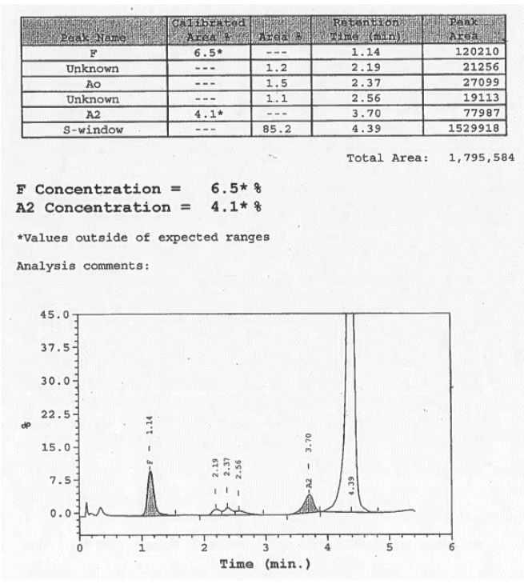

Red Cell Investigations
Screening for inherited red cell disorders.
Haemoglobinopathy Screening
A haemoglobinopathy is a genetic disorder caused by an abnormal structure of one of the globin chains of the haemoglobin molecule. The two most common and important examples are Sickle Cell Disease and Thalassaemia.
We screen for these conditions using a technique called High-Performance Liquid Chromatography (HPLC). This method separates out the different types of haemoglobin in a patient's blood, allowing us to detect abnormal variants (like Haemoglobin S in sickle cell) or identify patterns that suggest thalassaemia.
This screening is a vital part of the national antenatal screening programme and is also essential for patients before they receive an anaesthetic for surgery.
